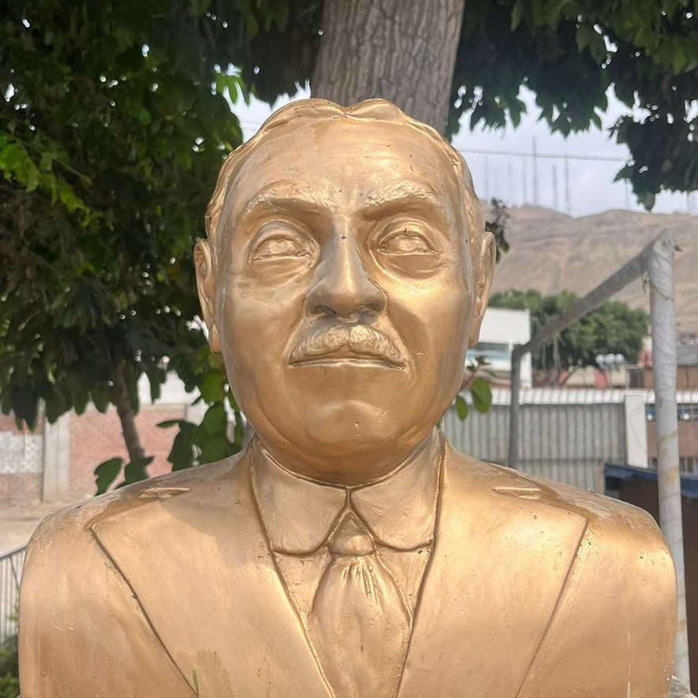

Conoce quiénes somos, de dónde venimos y el legado del gran educador que da nombre a nuestra institución: Don Enrique Nerini Collazos.
Un educador cuya vida fue un acto de entrega total a la formación de las nuevas generaciones peruanas.

Doctor en Letras · Educador · Gran Oficial de la Orden del Sol del Perú
Nacimiento: 24 de mayo de 1897, Lima, Perú
Formación: Dr. en Letras — UNMSM
Fundó: C.N. Nuestra Señora de Guadalupe (1943)
Distinción: Orden del Sol — Gran Oficial
Fallecimiento: 14 de julio de 1976, Lima, Perú
Enrique Nerini Collazos (1897–1976) fue uno de los educadores más destacados del Perú del siglo XX. Nacido en Lima en el mes de mayo, dedicó toda su vida a la formación de jóvenes y al fortalecimiento de la educación peruana, dejando una huella imborrable en generaciones de estudiantes.
Se graduó como Doctor en Letras de la Universidad Nacional Mayor de San Marcos, la más antigua universidad del continente americano, y desde temprana edad se dedicó a la docencia con una vocación que trascendió las aulas.
Su visión educativa era integral: creía firmemente que la formación debía abarcar el desarrollo intelectual, moral y físico del estudiante, y que la escuela era el espacio donde se forjaba el carácter de los futuros ciudadanos.
El 24 de mayo nace Enrique Nerini Collazos en la capital peruana.
Se gradúa como Doctor en Letras en la UNMSM, formándose en la más alta tradición académica peruana.
Fundó el Colegio Nacional "Nuestra Señora de Guadalupe", que se convertiría en una de las instituciones educativas más emblemáticas del país.
Recibe la condecoración en el grado de Gran Oficial, el más alto reconocimiento del Estado peruano a su labor educativa.
El 14 de julio fallece en Lima, dejando un legado imborrable en la educación peruana que continúa inspirando hasta hoy.
Tres pilares que definen la trascendencia de su vida y obra en la educación peruana.
En 1943, fundó el Colegio Nacional "Nuestra Señora de Guadalupe" en Lima, que se convertiría en una de las instituciones educativas más emblemáticas e influyentes del país, formando a generaciones de líderes peruanos.
Fue promotor de una educación que abarcaba el desarrollo intelectual, moral y físico del estudiante, reconociendo que la formación verdadera va mucho más allá de la transmisión de conocimientos.
Impulsó la innovación pedagógica y la formación docente en un momento crucial para la educación peruana, sentando bases que siguen siendo relevantes en la pedagogía contemporánea.
Chorrillos rinde homenaje permanente a Don Enrique Nerini Collazos a través de un busto y plazuela ubicados detrás del emblemático Monumento a Olaya, en el corazón del distrito. Este espacio es un punto de encuentro de la memoria histórica chorrillana y un recordatorio de que la educación es la base del progreso de los pueblos.
Nuestra institución, la IE N° 7034, lleva su nombre con orgullo. Es uno de los colegios más antiguos de Chorrillos, parte del tejido social y cultural del distrito, donde generaciones de familias han confiado la formación de sus hijos.
Cada alumno que cruza las puertas de nuestra institución continúa vivo el legado de un hombre que creyó, por encima de todo, en el poder transformador de la educación con valores.
Busto y plazuela dedicada detrás del Monumento a Olaya
La IE N° 7034 lleva su nombre con honor
Uno de los colegios más antiguos del distrito de Chorrillos
Referente de identidad cultural chorrillana
Generaciones de familias del Barrio Chorrillos formadas en sus aulas
Brindar una educación integral y de calidad en los niveles Inicial, Primaria y Secundaria, formando estudiantes con sólidos valores, pensamiento crítico y herramientas para su desarrollo personal y profesional.
Ser referente educativo de Chorrillos y Lima Sur, reconocida por la excelencia académica, la inclusión y la formación de ciudadanos comprometidos con su comunidad y con el Perú.
Respeto · Responsabilidad · Honestidad · Solidaridad · Identidad nacional y chorrillana · Compromiso con la excelencia